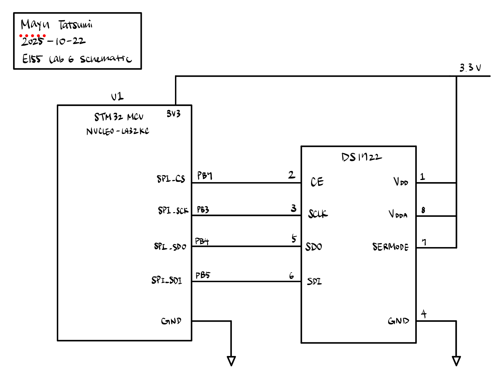
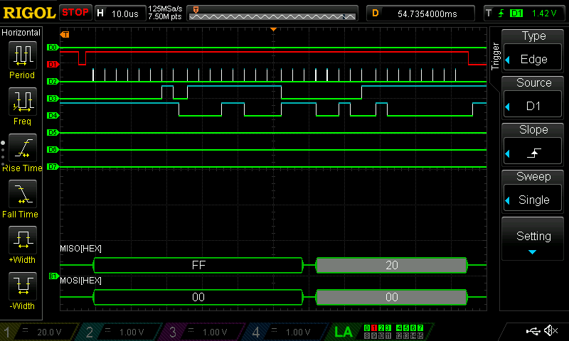

Lab 6: The Internet of Things and Serial Peripheral Interface
Introduction
In this lab, we utilized a temperature sensor and an ESP8266 module that hosted a webserver to demonstrate the usage of the SPI protocol. The temperature sensor was controlled by the MCU through SPI, sending readings at various levels of precision back to the MCU, which then displayed the information to a simple HTML webpage. The webpage also allowed for simple control of an LED via UART.
Lab Manual: E155 Lab 6 Instructions
Design and Testing Methodology
I built an SPI library that contained initSPI() and spiSendReceive() functions, which respectively configured and enabled the SPI peripheral, and transmits a character (1 byte) over SPI and returns the received character. CMSIS standards were followed to the best of my ability, using pre-defined macros and _VAL2FLD() for any multi-bit values during configuration. spiSendRecieve() waits for the TXE flag to set to 1, which indicates an empty transmit buffer. Once it’s empty, it writes your specified byte (passed in to the function as a parameter) the 8-bit data register. We then wait for the RXNE flag to pop up, which indicates a full recieve buffer. This basically means we wait until we fully recieve a byte. We then read that byte from the data register, and cast it to a volatile character to correctly store it as an 8-bit integer. This works because SPI is full-duplex and both transmits and recieves a byte of information at the same time.
I also built a DS1722 library based off its datasheet that contained initTempSensor(), getTemp(), and setPrecision(). These functions used the SPI interface to communicate to the sensor from the MCU. initTempSensor() only consisted of writing to address 0x80 for configuration and specifying continuous conversion mode via 0xEE. setPrecision() was also was just some if-else statements that was called via UART and took input from the buttons the user pressed on the webpage. The precision would be specified on the sensor by, again, writing to address 0x80 and specifying the precision values using values between 0xE0 to 0xE8, and higher precisions effectively took longer to convert.
The getTemp() function converted between the values of MSB and LSB and a valid temperature in degrees Celsius. As stated in the DS1722 datasheet, the MSB (in address 0x02) contained the sign bit and integer value of the temperature. The LSB (in address 0x01) contained the fractional bits at increments of 1/2^4=1/16=0.0625 degrees Celsius, but due the last 4 bits always being 0, it was necessary to divide by 4^8=256 to get the correct fractional value. As a result, the final equation for the temperature was \(T = MSB + \frac{LSB}{4^8}\). The values for MSB and LSB were obtained by accessing the 0x02 address and sending a dummy byte to recieve its output, and doing the same with the 0x01 address for the LSB value.
Building the webpage itself wasn’t so difficult since we were given a lot of starter code from the E155 GitHub Repository. I think all I did was just edit a little bit of the HTML and add in a couple strings to pass over UART. There was some basic logic to allow selecting precision, but really nothing to write home about. We connected to the ESP’s webpage by connecting to its WiFi access point and going to http://192.168.4.1/.
Technical Documentation
The source code for the project can be found in this GitHub repository.
Schematic

Figure 1 depicts the physical schematic of the design. The layout is pretty simple, since the PB3, PB4, and PB5 pins on the board have built-in alternate functions as SPI’s SCK, SDO, and SDI pins respectively. All that was needed was to specify it in the code during initialization. The SERMODE pin on the DS1722 was connected to V_DD because a connection to V_DD specified a SPI interface standard, while a connection to GND would chose a 3-wire interface standard instead.
Results and Discussion
Logic Analyzer

Figure 2 above is a sample SPI transaction from logic analyzer.
Conclusion
The design made in this lab successfully read temperatures through the DS1722 sensor and displayed them on a simple HTML website hosted on an ESP8266 module. The SPI protocol was initialized and utilized a send-recieve function to monitor changes. The UART protocol was also utilized to control a LED on the board. There was some confusion and unclear signals from the logic analyzer. Total hours worked: 14 hours.
AI Prototype Summary
Prompts
Prompt 1: I’m making a web portal to interface with a temperature sensor. Create a HTML page that looks good and is intuitive to show the temperature, control an LED, and change the precision of the readout.
Prompt 2: Write me a C function to carry out a SPI transaction to retrieve a temperature reading from a DS1722 sensor. Make use of CMSIS libraries for the STM32L432KC.
/**
* @brief Performs a 3-byte SPI transaction to read the 16-bit temperature from the DS1722 sensor.
* * Protocol: [COMMAND: 0x01] [DUMMY] [DUMMY] results in [GARBAGE] [T_MSB] [T_LSB]
* The raw 16-bit data is in Q12.4 format (12 integer bits, 4 fractional bits).
* * @return float The temperature reading in degrees Celsius.
*/
float getTemp(void){
uint8_t rx_msb, rx_lsb;
int16_t raw_temp;
// 1. Assert Chip Select (CS active high to start transaction)
digitalWrite(SPI_CS, PIO_HIGH);
// 2. Send Command Byte (0x01) to read T_MSB register.
// The first byte received here is garbage data from the command transmission.
spiSendReceive(DS1722_REG_TEMP_MSB);
// 3. Send Dummy Byte (0xFF) to clock out Temperature MSB
rx_msb = (uint8_t)spiSendReceive(0xFF);
// 4. Send Dummy Byte (0xFF) to clock out Temperature LSB
rx_lsb = (uint8_t)spiSendReceive(0xFF);
// 5. De-assert Chip Select (CS inactive low to end transaction)
digitalWrite(SPI_CS, PIO_LOW);
// 6. Combine MSB and LSB into a signed 16-bit integer
// The casting to int16_t is critical for correct handling of negative (two's complement) temperatures.
raw_temp = (int16_t)((rx_msb << 8) | rx_lsb);
// 7. Convert raw value (Q12.4 fixed-point) to degrees Celsius (raw * 0.0625)
return (float)raw_temp * DS1722_TEMP_RESOLUTION;
}Reflection
I used Gemini’s 2.5-Flash model for this prototype. Its first response to the prompt generated an HTML file with some JavaScript logic and styling to make it look nicer. However, as we were working on an MCU and needed to convert the HTML into string format, I had to ask it to create another version of the file that can fit with the structure of our project. Literally none of it worked though, even after like half an hour of debugging. The webserver kept throwing the Could not connect to the MCU. Please check your connections. (10 or fewer bytes were received from the processor.) error. Assuming that the string I was trying to pass in was too long, I tried to lengthen the tx_buffer variable to 2048, but that didn’t work either. It was also diffcult asking for a version of the code without giving it any context, so I tried passing in my main.c and DS1722.c, but all it did was break the formatting of the code. I would rate this process 1/10. I think it showed me some cool things you can do with HTML that I didn’t know about it beforehand, but the whole formatting issue got on my nerves and while it did built, did not get off the ground at all.
For the second prompt, it was able to utilize SPI just fine on the first try, but its logic was off and resulted in temperature values on the order of 1-2 degrees Celsius. The LLM edited my function getTemp() to have the msb and lsb values recorded right after each other instead of each address and reading after each operation. This, along with the bit-shift, could be the reason why the calculation isn’t being output properly.